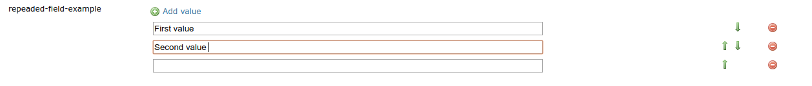
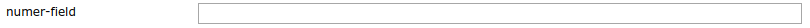

Fields configuration¶
The ui for the metadata tab is made from a list of field components.
The type of the field component and how they behave can be configured in the yaml file.
All fields should be configured as a list which has the parent key attributes.
Field options¶
A field is defined in the yaml following key-value pairs:
values (specific field types)
derivedFrom (specific field types)
typename (specific field types)
key¶
The key is the identifier for the field and should therefore be unique. Other configurations can refer the field by using this identifier. E.g the geonetwork mapping, internationalization.
Key |
Required |
Value |
|---|---|---|
key |
yes |
a unique string |
fieldType¶
Chooses the type of input widget for the field. A detailed description for each type can be found in the Field Types section.
Key |
Required |
Value |
|---|---|---|
fieldType |
yes |
|
label¶
If present this value will be used as the label for the field. When the label is not present in the yaml cofiguration the key will be used as label. Note: when the key is present in the internationalization (i18n) file see Internationalization support than the value from that file wil be used as the label.
Key |
Required |
Value |
|---|---|---|
label |
no |
any string |
occurrence¶
The value for occurrence determins whether or not the field should displayed as a table or as a single input field.
SINGLE will result in one input field.
e.g. single value input field of fieldType
TEXT.¶
Choosing REPEAT will render the field in a table allowing the user to input multiple values.
e.g. field of fieldType
TEXTrendered as a table.¶
The data in table can be sorted using the green arrow buttons.
Key |
Required |
Value |
|---|---|---|
occurrence |
no |
|
condition¶
Conditional attributes are attributes that are only visible for some layers. A typical example are attributes only present for raster or vector layers. The condition is specified in CQL which is evaluated against the layer’s ResourceInfo object.
For example:
condition: equalTo(typeOf("."), 'FeatureTypeInfo')
values¶
The choices in a DROPDOWN, SUGGESTBOX or REQUIREBOX can be set using the values attribute in the yaml.
This is useful for small list, for larger list it can be better to list the choices in a separate .csv file.
derivedFrom¶
Only used in the DERIVED field. The attribute derivedFrom contains the key for the parent on which the DERIVED field depends.
Follow the link for more information on the DERIVED field.
typename¶
The typename is a required attribute for COMPLEX fields. It contains the key pointing to the definition of the COMPLEX field.
A special typename featureAttribute is reserved for the Feature Catalog Generation and should not be used.
Field Types¶
UUID¶
Input field for a UUID, it allows any text input or the user can generate a UUID.
attributes:
- key: uuid-field
fieldType: UUID
NUMBER¶
Only numbers are accepted as valid input.

attributes:
- key: number-field
fieldType: NUMBER
DATETIME¶
Selection date with time information.
attributes:
- key: datetime-field
fieldType: DATETIME
DROPDOWN¶
A field for selecting a value from a dropdown.
The values can be configured with the values attribute in the yaml or they can be configured in an other .csv file which is used for dropdowns with a lot of choices.
Configuration in the yaml file.
attributes:
- key: dropdown-field
fieldType: DROPDOWN
values:
- first
- second
- third
To configure the values in a separate file add a yaml key csvImports on the same level as attributes and add the list of CSV files under this key.
The first line in each CSV file should contain the key of the dropdown field for which you want to add the choices.
metadata-ui.yaml
attributes:
- key: dropdown-field
fieldType: DROPDOWN
csvImports:
- dropdowncontent.csv
dropdowncontent.csv
dropdown-field
first
second
third
SUGGESTBOX¶
A field for selecting a value from a suggestbox. Suggestions will be given for the values where the input matches the beginning of the possible values. The values can be put in a separate CSV file in the same way as for the DROPDOWN field.
attributes:
- key: suggestbox-field
fieldType: SUGGESTBOX
values:
- first
- second
- third
REQUIREBOX¶
This type is identical to suggestbox, except that the user is not allowed to fill in a custom value but enforced to choose a suggested value. This can be handy when an field value must be an element from a list, but this list is too long for a dropdown to be practical.
DERIVED¶
A derived field is a hidden field whose value depends on an other field. The yaml key derivedFrom should contain the key of the field it depends on.
When a value is selected in the parent field a matching value for the derived field is searched in csv file or the value with the same index is picked from the values list.
The CSV file should have at least two columns and start with the key of the parent field in the first column followed by the values for the parent field, the other columns should contain the key(s) of the derived field(s) in the first row followed by the matching values.
Example derived field with config in a CSV file:
metadata-ui.yaml
attributes:
- key: derived-parent-field
fieldType: DROPDOWN
- key: hidden-field
fieldType: DERIVED
derivedFrom: derived-parent-field
csvImports:
- derived-mapping.csv
derivedmapping.csv
derived-parent-field;hidden-field
parent-value01;hidden-value01
parent-value02;hidden-value02
parent-value03;hidden-value03
Example derived field with values lists:
metadata-ui.yaml
attributes:
- key: derived-parent-field
fieldType: DROPDOWN
values:
- parent-value01
- parent-value02
- parent-value03
- key: hidden-field
fieldType: DERIVED
derivedFrom: derived-parent-field
values:
- hidden-value01
- hidden-value02
- hidden-value03
COMPLEX¶
A complex field is composed of multiple other fields. The yaml key typename is added to the field configuration.
On the root level the yaml key types indicates the beginning of all complex type definition.
A type definition should contain the typename followed by the key attributes which contains the configuration for the subfields.
attributes:
- key: complex-type
fieldType: COMPLEX
typename: complex-field
types:
- typename: complex-field
attributes:
- key: object-text
fieldType: TEXT
- key: object-numer
fieldType: NUMBER
Feature Catalog Generation¶
To create a feature catalog for a vector layer, a complex structure is needed to describe all the attributes. A lot of this information is already present in the GeoServer feature type or the database.
Metadata supports automatically generating a new structure in the metadata from the information at hands that can be customised afterwards.
To create support for this feature in your configuration, define a repeatable COMPLEX field with built-in fieldType featureAttribute .
In the example the featureCatalog object has two attributes. A unique identifier of the type UUID and the feature attribute field.
e.g. Empty Feature attribute field¶
- typename: featureCatalog
attributes:
- label: Unique identifier
key: feature-catalog-identifier
fieldType: UUID
- label: Feature attribute
key: feature-attribute
fieldType: COMPLEX
typename: featureAttribute
occurrence: REPEAT
The Generate action will check the database metadata for that layer and generate a feature attribute for each column in the table.
e.g. Feature attribute with generate feature types¶
Whitin each feature attribute there is another Generate action that will generate the domain.
e.g. Generate domain dialog¶
- There are two options to do this:
Using the existing data in the database for this attribute.
Using data from a look-up table in the same database. In this case you must specify the table, an attribute from which to take values and an attribute from which to take definitions.
e.g. Feature attribute with generate domain¶
Internationalization support¶
All metadata field labels that appear in the Metadata fields can be internationalized. This is performed by creating an internationalization (i18n) file named metadata.properties. Create an entry for each key in the gui configuration following this pattern: PREFIX.attribute-key
e.g.
metadata.properties
metadata.generated.form.metadata-identifier=Unique identifier for the metadata
metadata_nl.properties
metadata.generated.form.metadata-identifier=Metadata identificator
Drop-down labels can be translated too, in the same properties file, using the key metadata.generated.form.[attributeKey].[value]=[label].
The value that will be internally stored for this field stays the same.